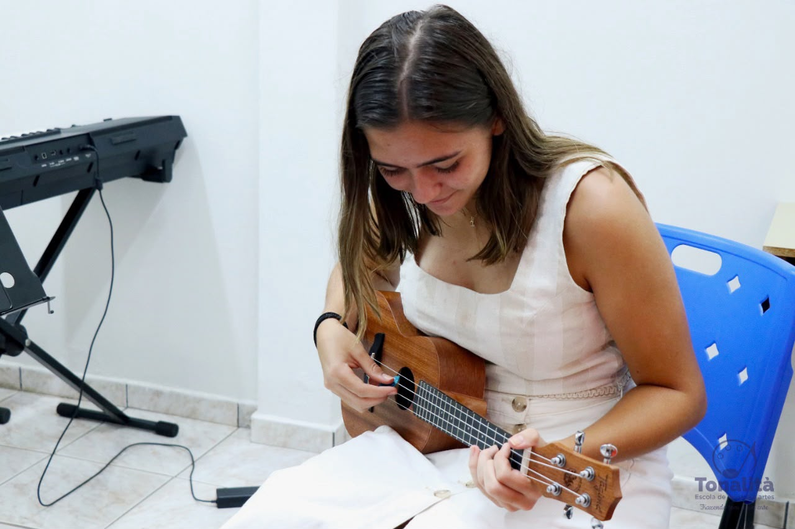
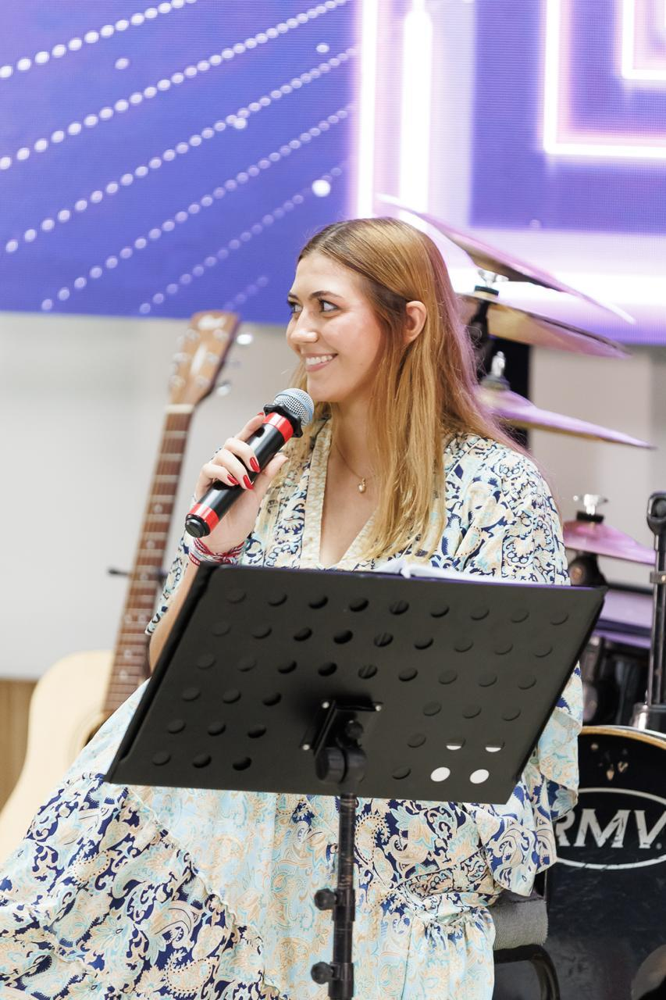

Singer, Keyboardist and Guitarist
Being frequently at church, music was always a part of my life. Over time, it sparked a new hobby in me: playing the guitar. After a few years of playing, my curiosity led me to the ukulele — almost like a little guitar with fewer strings. It was easier to learn, but its sound had a completely different character.


Then, I started playing the piano. It was challenging at first, but I quickly fell in love with it. There is something about piano music that gives me chills every time, especially when I play songs that truly mean something to me. As I spent more time playing, singing came naturally. By singing along to the songs I loved, I gradually became more confident and improved my voice.

Guitar, ukulele, piano, and singing all have one thing in common: I play and practice them with my heart. Feeling the music helps me understand its rhythm, melody, and meaning. More than that, music has taught me discipline, patience, and the courage to learn new things and share them in front of other people.